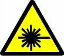
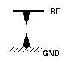
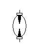
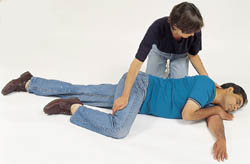
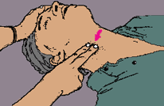
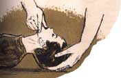
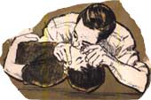
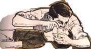
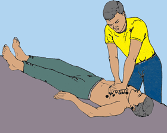

Notă introductivă:
Prezentele instrucțiuni au fost derivate din cele elaborate în 1973 de C.N.E.F.S. - Federația Română de Radioamatorism, iar pe localhost au fost rearanjate și completate pentru a urmări mai exact curricula NTSM adoptată de ANCOM pentru armonizarea CEPT-HAREC
Din dorința ca acest material să fie ușor de asimilat și util nu doar la examen
am introdus câteva subcapitole, imagini și completări în text de această culoare. Aceste materiale
suplimentare nu fac subiect de examen oficial.
Probleme Rezolvate - apăsați pe butonul de mai jos, este chiar una din bazele de date folosite de examenul online
INSTRUCTIUNI
de tehnica securitatii pentru statiile
de radioamatori
Cuprinsul programei de NTSM armonizate cu cerintele CEPT:
I. PROTECTIA MUNCII
1.1. Corpul uman
- Consecintele socului electric
- Precautii impotriva socului electric
1.2. Reteaua de alimentare
- Diferenta dintre linia de faza, nul si impamantare (codul culorilor)
- Importanta unor conexiuni bine impamantate
- Sigurante rapide si lente; valoarea unei sigurante
- Sigurante diferentiale (extra-curricular)
1.3. Pericole
- Tensiuni inalte
- Condensatoare incarcate
- Raza LASER(extra-curricular)
- Lipirea cu letcon, fludor, flux(extra-curricular)
- Efectele radiatiei RF neionizante asupra corpului uman(extra-curricular);
1.4. Traznete
- Pericole
- Protectie
- Impamantarea echipamentelor
- Priza de pamant, caracteristici
1.5. Responsabilitati si indatoriri
- Responsabilitatea operatorului la statia individuala
- Obligatiile operatorului la statia colectiva
- Raspunderile si indatoririle responsabilului de club la statia colectiva
II. MASURI DE TEHNICA SECURITATII LA APARATELE DE RECEPTIE
- Conectarea castilor
- Protejarea auzului, Noise Blanker
- Realizarea receptorului, carcasa.
III. MASURI DE TEHNICA SECURITATII LA APARATELE DE EMISIE
- Folosirea surselor de alimentare de inalta tensiune
- Usi de acces la echipamentele de inalta tensiune
- Cuplarea antenei la emitator
- Marcarea locurilor periculoase de la statie
- Accesul la statie si supravegherea functionarii statiei
IV. ANTENA SI LUCRUL LA INALTIME
- Piloni, ancorari
- Lucrul pe acoperisuri si la inaltime
- Suspendarea conductorilor
- fidere si protectia la descarcari de inalta tensiune
V. PRIMUL AJUTOR IN CAZ DE ACCIDENTARE PRIN ELECTROCUTARE
A. Scoaterea celui accidentat de sub curent
B. Primele masuri dupa scoaterea de sub curent
C. Metode de respiratie artificiala
D. Masajul inimii
1.1 Corpul uman
Observarea fenomenelor asupra organismele vii stimulate cu curent electric sunt cunoscute inca din 1780 prin experimentele lui Galvani asupra muschilor de broasca, iar de atunci majoritatea aspectelor privind actiunea curentului electric asupra corpului umana au fost observate si catalogate.
Organismul uman viu este alcatuit dintr-o multitudine de celule, care din punct de vedere electric constituie medii conductoare de natura electrolitica.
In el deja exista surse de tensiune si de semnal electrice proprii necesare in coordonarea si functionarea inimii, muschilor, creierului.
Trecerea curentului electric peste un anumit nivel prin organism este insotita de o serie de fenomene termice, electrodinamice, electrolitice, biochimice, biofizice, fiziologice care pot fi neglijabile, temporare, permanente sau fatale.
Efectele trecerii curentului electric prin organismele vii
Trecerea curentului electric prin corpul omului, care este un conductor electrobiologic, este insotita de fenomene al caror efecte se manifesta sub forme multiple si complexe. Efectele curentului electric pot fi:
- termice, manifestate fie prin arsuri ale unor parti ale corpului, fie prin incalzirea excesiva a unor organe interne urmata de dereglarea lor functionala;
- electrochimice constand in descompunerea lichidului organic, inclusiv a sangelui, si la alternarea compozitiei sale;
- biologice constand in dereglarea proceselor electrice interne, caracteristice materiei vii, avand drept rezultat contractia muschilor parcursi in sens longitudinal de curentul electric.
Actiunea curentului electric poate fi privita sub doua aspecte:
- actiune directa asupra tesuturilor pe care le parcurge;
- actiune reflectata, prin intermediul sistemului nervos central, care afecteaza si tesuturile neparcurse de curent electric.
Actiunea curentului electric duce la modificari functionale superficiale sau profunde ale organismului
atunci cand intensitatea curentului electric ce trece prin corp depaseste o anumita valoare
limita tolerata de organism.
Campurile electrice exterioare de frecvente joase, 50-100 Hz, au efecte asupra sistemului nervos central, iar cele cu frecvente inalte de 10-50 MHz au efecte asupra sistemului circulator.
De asemenea, campurile electrice de joasa frecventa (50Hz frecventa retea) sunt mai periculoase decat cele de curent continuu fiindca modifica structura si comportamentul celular prin schimbarea proprietatilor dielectrice ale membranei celulare si in consecinta la o scadere a rezistentei electrice cutanate.
Consecintele socului electric
Fenomenele ce apar in organism, ca urmare a trecerii curentului electric si care in general pot fi grupate in afectiuni ale sistemului nervos central, tulburari cardiace si respiratorii definesc conceptul de soc electric.
Producerea unui soc electric fatal poarta denumirea de electrocutare.
Leziunile superficiale locale, arsurile, metalizarea pieii prin patrunderea in tegument a stropilor de metal, fenomene produse tot de trecerea curentului electric, definesc conceptul de traumatism electric.
Electrocutarea se poate produce in medie la o tensiune mai mare de 24 V.
Curentul maxim admis sa treaca prin organismul uman fara a-l pune in pericol este de 10 mA in curent alternativ (c.a) si 50 mA in curent continuu (c.a).
Valorile de mai sus nu sunt valori garantate, ci valori medii, exista deviatii in functie de sex, varsta, umiditate atmosferica s.a., s-a constatat ca in anumite conditii si pozitii de aplicare a tensiunii, se provoaca fibrilatia inimii si la 17mA!
Pericolul de electrocutare este mai mare pentru persoanele obosite, bolnave sau care au consumat bauturi alcoolice (rezistenta lor electrica este mai mica) sau pentru persoanele aflate in medii umede sau cu tegumente umede sau transpirate.
Precautii impotriva socului electric
Omul nu are nici un organ senzorial care sa detecteze, in mod direct, marimile electromagnetice cum ar fi tensiunea electrica, curentul electric, campul magnetic de aceea ne bazam pe cunostinte de specialitate, pe metode de preventie, sisteme de masura si protectie, proceduri.
Tot ce depaseste 24V (atentie si -24V!) se considera "sub tensiune".
Delimitarea incintelor sub tensiune ca zona de pericol sau SUB TENSIUNE. Se marcheaza vizibil cu NU ATINGETI! PERICOL DE MOARTE!
Zona de langa (camera tehnica) se delimiteaza ca fiind zona de proximitate. Si aici se pot intampla accidente. Varsarea unui recipient cu apa sau producerea de pulberi (grafit, faina!!!) pot duce la producerea de arcuri electrice. De aceea si zona de proximitate trebuie tratata cu atentie.
Nu se lucreaza sub tensiune! Regula celor 5 pasi:
- Se scoate de sub tensiune
- Se previne orice posibila realimentare
- Se verifica absenta tensiunii
- Se pune la masa si se scurtcircuiteza alimentarea ca metoda suplimentara de siguranta
- Se marcheaza zona de lucru si se delimiteaza clar de zonele vecine sub tensiune
Folosirea sistemelor de protectie automate: sigurante normale/diferentiale, intrerupatoare la usi, intrerupator principal
Sisteme de protectie pasive: Izolatiile si echipamentele de protectie trebuie sa existe la statie si sa fie adecvate tensiunilor folosite.
Responsabilul de statie trebuie sa instruiasca si sa informeze pe cei care intra asupra zonelor de lucru, modalitatilor si a potentialor pericole, despre protectii, ca metoda de preventie.
Procedurile de lucru ne ajuta sa nu omitem vreun pas important. De exemplu regula cu 5 pasi de mai sus.
1.2 Reteaua de alimentare
Diferenta dintre linia de faza, nul si impamantare (codul culorilor)
Standardul international IEC 60446 specifica codul culorilor pentru instalatiile "casnice" de 220V;
- Firul de nul/neutral trebuie sa fie albastru, preferabil albastru-deschis. Albastrul nu se mai foloseste nicaieri altundeva. Este firul de inchidere al circuitului electric. Atentie! Este nul fata de 220V, nu fata de pamant, este conductor flotant.
- Firul de faza / AC / firul de tensiune se marcheaza cu negru, maro sau gri. Aduce tensiunea de 220V;
- Firul de protectie/impamantare se marcheaza cu combinatia de culori verde - galben. Acesta este firul care se leaga la carcasa aparaturii casnice, pentru a conduce tensiunile periculoase sau incarcaturi statice la impamantare. Cand aveti nevoie de impamantare adevarata, nu va bazati pe acest fir subtire si lung.
Importanta unor conexiuni bine impamantate
Impamantarea este o tema pe care se insista in acest material, importanta impamantarii e de la sine inteleasa.
Sarcina impamantarii este sa conduca la pamant tensiunile inalte aparute accidental(s-a rupt un fir si s-a sprijinit de interiorul carcasei), sa conduca la masa incarcaturile statice (vantul incarca static firul antenei la sute de mii de V, se descarca printr-un soc de RF de exemplu) iar daca vorbim de paratraznet, si el se leaga la impamantare.
In toate cazurile prin sintagma "bine impamantate" intelegem o metoda corecta de legare, de rezistenta foarte mica(sub 1 ohm), capabila sa duca un curent mare si care nu se deterioreaza la prima sarcina sau in timp de la factorii de mediu. Periodic conexiunile se verifica si se refac daca e nevoie.
Sigurante rapide si lente; valoarea unei sigurante
In cataloagele de sigurante, exista pentru fiecare siguranta parametrul In (Inominal) si o lista de timpi de intrerupere la In, 2In, ...5In. Asa ne putem da seama cat de rapida e o siguranta. In functie de aplicatie, proiectantul alege o siguranta care sa se arda suficient de rapid.
De obicei, sigurantele rapide sunt in cilindru de sticla, unele au crestaturi pe lamela iar altele sunt sub forma de doua arcuri pretensionate, lipite cu o bobita de aliaj care se topeste la un anumit curent si arcurile se indeparteaza, scurtand timpul unui eventual arc electric.
Sigurante diferentiale (extra-curricular)
Sunt sigurante automate al caror parametru este ΔI, cativa mA. Aceasta siguranta este montata pe firul de faza si nul al aceluiasi ochi de retea, si functioneaza pe principiul conservarii de energie/materie, adica curentul care intra in consumator este egal cu curentul care iese din consumator (electronii nu se consuma). Daca egalitatea nu se satisface, inseamna ca exista o scurgere de curent, de exemplu cineva se electrocuteaza si o parte din curent e condusa la masa. Cand diferenta de curent sesizata de siguranta diferentiala ajunge la ΔI, siguranta se declanseaza intrerupand circuitul.
Este o siguranta recomandata a fi folosita, atentie doar ca ΔI sa nu fie prea mare - mai sus am mentionat limita de electrocutare de 10mA in c.a.>
1.3 Pericole
Tensiuni inalte
Pericolele datorate tensiunilor inalte au la baza caracteristicile corpului uman de a conduce curentul, detaliate la capitolul 1.1
Condensatoare incarcate
Un condensator mentine tensiunea la care a fost incarcat o perioada mai lunga sau mai scurta de timp, in functie de
circuitul pe care il are in sarcina. Daca nu este descarcat automat, are pierderi mici si tensiune mare atunci cand este atins se descarca prin corpul uman. In functie de traseul urmat prin corp si de capacitatea lui, socul electric poate fi periculos, dureros, sau doar de atentionare. Muschii se contracta automat si mana in miscare involuntara poate distruge alte piese. Traseul cel mai periculos al curentului e cand se inchide prin inima, adica intre brate, sau intre brat si picior opuse.
Raza LASER(extra-curricular)
Raza LASER este o lumina coerenta, sinfazata. In statiile de radioamatori se foloseste cel mai des in legaturile de fibra optica dintre un PC de comanda si statia de radioamator comandata. Astfel se inlocuiesc mai vechile legaturi seriale, zgomotoase electromagnetic cu legaturi optice.
Desi se folosesc diode LASER de putere foarte mica(mW), raza LASER afecteaza retina asa ca trebuie sa nu privim in sursa de semnal, sa folosim ochelari speciali de lucru cu LASER, cablurile optice se tin in mufe sau cu capacele puse.
Toate aparatele ce folosesc LASER trebuie sa aiba aplicata urmatoarea eticheta de avertizare:

Lipirea cu letcon, fludor, flux(extra-curricular)
La lipirea componentelor electronice, trebuie sa tinem cont de urmatoarele aspecte:
- Fludorul se topeste la cateva sute de grade, ne putem arde cu letconul, ciocanul de lipit, cu fludor topit sau stropi de fludor. Se intampla destul de des sa ne atingem de varf sau un strop de fludor sa ajunga pe piele dar in majoritatea cazurilor nu se ajunge la arsuri propriu-zise. In caz de arsuri se procedeaza la indepartarea din zona de pericol, rana trebuie racita rapid cu apa rece si se merge la medic.
- Ne asiguram ca nimeni nu poate atinge varful fierbinte al ciocanului de lipit cel putin 10 minute dupa ce este deconectat de la energie.
- Se poarta ochelari de protectie tip laborator, pentru a ne asigura ca stropi de metal incins nu ne ajung in ochi.
- La topire, sacazul din mijlocul fludorului produce fum de sacaz dar acesta contine si vapori de metal din fludor; Din acest motiv se lucreaza in incaperi bine ventilate si daca se lucreaza perioade foarte lungi de timp, este indicata montarea unei instalatii de evacuare fortata a fumului.
Efectele radiatiei RF neionizante asupra corpului uman(extra-curricular)
Unda de radiofrecventa emisa de antena este neionizanta adica nu distruge ADN-ul asa cum o fac razele X, gamma, nucleare, are insa un efect termic asupra tesuturilor. Cel mai sensibil este ochiul, la care provoaca incalzire si acest lucru duce la cataracta. De aceea statia portabila care are antena in dreptul fetei trebuie sa o folosim cat mai scurt si la putere cat mai mica
Efectul radiatiei RF este proportional cu densitatea de putere de RF incasata de corpul operatorului, iar densitatea de putere scade patratic cu cresterea distantei dintre acesta si antena de emisie.
La puteri emise mai mari de 10W in UUS si chiar US, atingerea firului cald (cu mana de ex.) poate produce instantaneu arsuri in volum si nu de suprafata ca atingerea de un corp fierbinte; Deoarece unda depolarizeaza nervii arsura nu este semnalizata catre creier ca "durere", accidentatul nu-si retrage involuntar mana. Prima data simte olfactiv miros de carne arsa, vede firisorul de fum si isi retrage voluntar mana. Locul ars ramane de tip 'carne alba' multa vreme, se vindeca greu.
1.4 Traznete
Pericole
pericol de moarte prin electrocutare la lovitura directa prin fulger principal/secundar;
electrocutare prin inductie in obiecte metalice atinse.
incendiu prin distrugeri de echipamente la lovitura directa sau inductie
lumina puternica a arcului electric - duce la arsuri UV, orbire
Protectie
Paratraznet, decuplare, soc RF, impamantare
O sursa foarte buna de informatii despre traznete si mai ales paratraznete, chiar document de referinta este normativul ANRE "NORMATIV PRIVIND ALEGEREA IZOLATIEI, COORDONAREA IZOLATIEI SI PROTECTIA INSTALATIILOR ELECTROENERGETICE IMPOTRIVA SUPRATENSIUNILOR, NTE 001/03/00"
Puncte de atins:
- 3.51, 3.52, 3.53
- 3.56
- Fig. 3.4. si 3.5
- 12.2, 12.3, 12.5
Impamantarea echipamentelor
la priza de impamantare, nu la firul verde-galben al instalatiei casnice.
Priza de pamant, caracteristici
Prizele de pamant vor fi de tipul artificial, tubulare sau radiale. Pentru realizarea lor se vor folosi
tevi sau platbande de otel. Rezistenta electrica a prizelor de pamant va fi sub 4 ohmi. Daca este imposibil
de realizat o priza de pamant artificiala, se vor putea folosi in acest scop si conductele de alimentare cu
apa, cu conditia de a se verifica daca este din punct de vedere electric asigurata legatura dintre tevi, iar
rezistenta electrica este mica.
Masurarea rezistentei electrice a prizei de pamant
Masurarea nu se face cu ohmmetrul.
Pentru a evita erorile de masurare date de curentii galvanici ai contactului sol-electrod, cele mai multe
aparate de test folosesc un generator de curent alternativ cu frecventa de aproximativ 470-600Hz, peste frecventa
industriala.
Se foloseste tehnica masuratorii in patru puncte pentru a se elimina influenta conductorilor de masurare.
Se mai folosesc aparate de testarea rezistentei prizei de pamant prin injectie de pulsuri de curent.
Legatura cu priza de pamant se va face cu conductoare cat mai scurte, care vor fi sudate sau cositorite.
Daca se foloseste cositorirea, lipiturile vor fi acoperite cu smoala topita . Conductoarele legate de priza
de pamant pot fi din cupru sau fier. Sectiunea minima a conductoarelor de cupru va fi de 12mm patrati.
Conductoarele din fier vor avea sectiunea mai mare decat cele din cupru.
Cuvantul specialistului in telecomunicatii:
- Priza de pamint trebuie sa fie sub 1 ohm, altfel e degeaba.
- Priza de max. 1 ohm are 8 electrozi de otel zincat, ingropati si legati intre ei cu platbanda de 40x4mm;
- Coborirea la priza de pamint se face pe peretele blocului, vertical, la distanta de minimum 1m de ferestre.
- Daca vreti sa va legati la tevile de calorifer, sau apa, mai bine lasati.
- In nici un caz nu se foloseste impamintarea de la priza!
- Reveniti din cand in cand pe localhost pentru versiunea actualizata a documentului
- Pentru feederul de antena se folosesc cabluri ecranate. Ecranul se leaga la pamint la ambele capete, sau din 30 in 30m si la capete
daca e mai lung.
- Legatura ecranului la pamint trebuie sa fie foarte bine facuta si foarte bine hidroizolata cu izolator special.
- Pentru conductorul activ, se foloseste surge arrester cu gaz sau eclator (se pune pe semnalul RF)
- DACA NU FOLOSITI CABLU ECRANAT SI FOARTE BINE IMPAMINTAT, RISCATI SA VA BAGATI FULGERUL IN CASA, SI ATUNCI
SA ZICETI MERCI DACA SCAPATI VOI, NU APARATELE!
- Cu respectarea conditiilor de impamantare de mai sus, sistemul suporta lovitura de trasnet in feeder sau direct
in antena fara nici un risc si fara vreun efect distructiv.
(preluare dupa un site de discutii pe teme telecom - http://forum.softpedia.com/index.php?showtopic=11893)
Legaturile cu priza de pamant si rezistenta electrica a acesteia vor fi verificate cel putin de doua
ori pe an.
1.5 Responsabilitati si indatoriri
Cunoasterea si respectarea instructiunilor de tehnica securitatii si protectia muncii la statiile
de radioamatori are ca scop sa inlature pericolele de accidentare ce pot surveni in special din cauza
electrocutarilor.
Raspunderea pentru respectarea prezentelor instructiuni si pentru eventualele accidente, revine in
cazul statiilor individuale detinatorului statiei, iar in cazul statiilor colective, responsabilului
statiei.
Operatorii statiei colective sunt obligati:
a)sa cunoasca si sa respecte instructiunile de tehnica securitatii si protectiei muncii;
b)sa atraga atentia sefului statiei asupra eventualelor deficiente observate, care ar putea provoca
accidente;
c)sa nu opereze statia si sa nu execute lucrari in cazul cand masurile de protectie nu sunt respectate.
Responsabilul statiei colective are urmatoarele indatoriri:
a.) sa identifice si sa studieze impreuna cu colectivul de lucru de la statie, locurile periculoase
ale instalatiei si sa ia masurile necesare pentru asigurarea securitatii celor care opereaza statia;
b.)sa aplice masurile de protectia muncii si tehnica securitatii astfel ca lucrul la statie sa se
desfasoare in conditii lipsite de pericol.
c.)sa supravegheze buna stare a utilajului, a sculelor si a dispozitivelor de protectie, neadmitand sa
se lucreze cu utilaje, scule si dispozitive de protectie defecte sau necorespunzatoare lucrarilor ce
se cer, sa propuna masuri pentru sanctionarea celor ce scot dispozitivele de protectie, sa urmareasca
efectuarea reviziilor si reparatiilor periodice ale dispozitivelor de protectie, sa asigure buna lor
functionare, sa stabileasca si sa inregistreze lipsurile si defectele utilajelor si dispozitivelor
de protectie.
| II. MASURI DE TEHNICA SECURITATII LA APARATELE DE RECEPTIE |
2.1. Aparatul de receptie va fi introdus intr-o cutie care sa nu permita accesul la partile aflate
sub tensiune; partile metalice: carcasa, sasiul vor fi conectate la priza de pamant.
2.2. Se interzice conectarea castilor direct in circuitul anodic al tubului final amplificator de
audiofrecventa. Castile vor fi conectate intre masa si anodul tubului final prin intermediul unui
condensator fix cu capacitatea de 0,1...1mF si tensiunea de lucru egala cu cel putin dublul tensiunii
anodice aplicate tubului.
Castile se pot conecta la aparat si prin intermediul unui transformator de iesire, cu conditia ca
infasurarea secundara a acestuia sa fie bine izolata de cea primara, iar una din extremitatile secundarului
sa se conecteze la masa. Se vor evita astfel pericolele de electrocutare intre casti si masa ce
ar putea sa se produca printr-o deficienta de izolatie a castilor sau a cordonului acestora.
2.3. Se va evita sistemul de bobine schimbatoare in cazul cand pe bobinele respective circula o
componenta de curent continuu mai mare de 24V. Schimbarea bobinelor se va face cu ajutorul comutatoarelor.
In cazul cand acest lucru nu este posibil, se admite schimbarea manuala a bobinelor cu conditia ca
in prealabil sa se intrerupa tensiunea anodica.
2.4. In cazul cand se utilizeaza surse de alimentare separate, ele vor fi inchise in cutii metalice,
care vor fi legate la priza de pamant iar conductorii de alimentare vor fi bine izolati pe parcursul
de la sursa la aparat. Bornele sau conectoarele de inalta tensiune vor fi montate pe cat posibil in
partea din spate a aparatului iar nu pe panoul frontal.
2.5. Pentru protejarea auzului se recomanda folosirea limitatoarelor de perturbatii (numite Noise Blanker si in inscriptiile de pe aparate) si in general
mentinerea unui nivel sonor moderat in casti, cand ascultarea se face cu acestea.
2.6. Aparatele de receptie vor fi prevazute cu sigurante fuzibile in circuitul de alimentare. Se recomanda
sa se prevada si sigurante pentru protejarea circuitului infasurarii secundare a transformatorului de retea
al sursei de alimentare anodice.
2.7. Aparatele de receptie nu vor fi lasate in functiune fara supraveghere, deoarece prezinta pericol de
incendiu.
| III. MASURI DE TEHNICA SECURITATII LA APARATELE DE EMISIE |
3.1. Aparatele de radio-emisie, sursele de alimentare etc. vor fi executate pe sasie metalice si panouri
montate pe stelaje metalice inchise in casete metalice care vor fi conectate la priza de pamant.
3.2. Toate capacele si usile de acces la unitatile emitatorului vor fi prevazute cu sisteme de intrerupere
a tensiunilor mai mari de 24 de volti, in cazul deschiderii lor. Este absolut interzis sa se blocheze aceste
sisteme de protectie, sa se execute lucrari sub tensiune sau sa se scoata fire aflate sub tensiune in afara
cutiilor in care sunt montate piesele emitatorului. Reglajele ce trebuie facute sub tensiune, se vor executa
numai cu scule cu o buna izolatie, corespunzatoare tensiunilor folosite.
3.3. Manipularea emitatorului in telegrafie, se va face cu ajutorul unui releu la o tensiune de maximum 24
de volti.
3.4. Nu se recomanda folosirea surselor de alimentare cu inalta tensiune separate. Daca se folosesc totusi
astfel de surse, ele vor fi inchise in cutii metalice, legate la priza de pamant. Legaturile intre sursa de
alimentare si aparate, vor fi izolate si ecranate.
3.5. Trecerea de la o gama de lucru la alta se va face cu ajutorul comutatoarelor. Se admite schimbarea
manuala a bobinelor cu conditia montarii unui sistem de intrerupere automata a tensiunii anodice atunci
cand se face operatia de schimbare. Sistemul nu trebuie sa permita sub nici o forma posibilitatea de
atingere a bobinelor atunci cand ele sunt sub tensiune.
3.6. Cuplajul cu antena va fi inductiv sau capacitiv. Capacitorul de cuplaj va avea o tensiune de strapungere
egala cu cel putin de trei ori tensiunea anodica de alimentare a etajului final.
3.7. Sistemul de alimentare al emitatorului va fi prevazut cu sigurante automate sau fuzibile de valoare
corespunzatoare pe circuitul de retea. Se recomanda sa se prevada sigurante si in circuitele secundare
ale transformatorului de retea.
3.8. Locurile periculoase ale instalatiei vor fi marcate cu inscriptia : NU ATINGETI! PERICOL DE MOARTE!
3.9. in camera unde este instalat emitatorul nu se va permite intrarea copiilor si a persoanelor straine
de statie, fara un insotitor din partea personalului statiei.
3.10 Aparatele de emisie nu vor fi lasate in functiune, fara supraveghere, deoarece prezinta pericol de
incendiu.
| IV. ANTENA SI LUCRUL LA INALTIME |
4.1. Pe acoperisurile cladirilor se pot instala piloni cu ancorare, de cel mult 8 metri inaltime. Pilonii
cu inaltime mai mare pot fi instalati numai cu aprobarea organelor locale care au calitatea de a da asemenea
aprobari.
4.2. Ancorele pilonilor instalati pe acoperisurile cladirilor trebuie sa fie legate de carlige sau inele
insurubate in grinzile acoperisurilor sau in peretii caselor. Este interzisa legarea ancorelor si a pilonilor
de cosurile de fum, lucarne, felinare de iluminat etc.
4.3. Suspendarea antenelor deasupra conductoarelor retelei de iluminat si a liniilor de radioficare se
permite numai in cazul cand aceste conductoare sunt izolate, au o pozitie perpendiculara pe directia antenei
si se gasesc la o distanta de cel putin 4 metri de aceasta. Suspendarea antenelor deasupra strazilor cu
instalatie de tractiune electrica, deasupra sau dedesubtul conductoarelor liniilor de tensiune peste 1000
volti este interzisa.
4.4. Persoanele care lucreaza pe acoperis vor lua toate masurile de siguranta ce se impun pentru a preveni
caderile. Se vor folosi centuri de siguranta si o franghie de siguranta de cel putin 12mm diametru.
Este interzis a se lucra pe acoperis pe timp de polei.
4.5. Pe fiderii de alimentare ai antenelor de emisie si receptie se vor monta comutatoare de punere la
pamant si parafulgere de tipul cu varfuri. In timpul furtunii cu descarcari electrice, fiderii antenelor se
vor conecta la priza de pamant.
Parafulgerul(eclatorul)
Parafulgerul este un dispozitiv simplu care are doua piese metalice ascutite, cu varfurile foarte apropiate.
Principiul de functionale se bazeaza pe potentialul electrostatic foarte mare care se obtine la varf in
conditiile de incarcare cu sarcini electrice a unui element. Daca intre cei doi electrozi distanta este de un
mm, atunci tensiunea la care apare strapungerea in aer uscat este de 400V, iar in aer umed, mai putin. Tensiunile
de aceasta marime sunt puse la masa de diodele in antiparalel care sunt instalate la intrarea transceiverelor.
Tubul cu descarcare in gaz(surge arrester)
Este un tub electric cu electrozi reci, care se folosea in trecut si pe post de element stabilizator, asemanator
diodei Zenner. Are acelasi principiu de functionare ca eclatorul, insa gazul din incinta reduce cu mult tensiunea
de strapungere.
|

|

|
| eclatorul |
Tub cu descarcare in gaze |
Aceste doua dispozitive sunt utile nu doar in conditii de furtuna, ci si in conditii de vreme buna - antenele,
cu cat sunt mai mari(antenele cu elemente), mai lungi(cele filare), cu atat le creste capacitatea, iar in conditii de vant chiar moderat
antenele se incarca electrostatic, dobandind potentiale foarte mari. Acest potential se va descarca la masa in mod
distructiv prin transceiver sau in mod nedistructiv pe la mufe sau imbinari de cabluri, generand zgomot electromagnetic.
| V. PRIMUL AJUTOR IN CAZ DE ACCIDENTARE PRIN ELECTROCUTARE
|
A. SCOATEREA CELUI ACCIDENTAT DE SUB CURENT
La instalatiile electrice, atingerea partilor conducatoare de curent care se gasesc sub curent(tensiune)
provoaca in majoritatea cazurilor o contractare brusca si involuntara a muschilor. Din aceasta cauza,
cand accidentatul tine conductorul in maini, degetele se strang atat de tare, incat desclestarea lor de pe
conductor devine imposibila. Daca acesta ramane in atingere cu partile conductoare de curent, atunci este
necesar sa se stie ca fara aplicarea masurilor necesare de securitate, atingerea celui aflat in sub curent
este periculoasa si pentru viata celui ce intervine.
Prima actiune de intreprins este deconectarea partii de instalatie de care este prinsa persoana accidentatului.
Cu aceasta ocazie trebuie sa se tina cont de urmatoarele :
- In cazul in care accidentatul se gaseste agatat la o inaltime oarecare, deconectarea instalatiei si
eliberarea acestuia de sub curent poate sa provoace un rau mai mare decat cel cauzat de curentul electric,
de aceea trebuie luate toate masurile care sa garanteze securitatea celui accidentat in caz de cadere.
- In caz de deconectare, pot fi stinse concomitent si luminile. De aceea, trebuie luate masuri pentru a
avea alte surse de iluminat: (felinare, faclii, lumanari, un iluminat de rezerva, felinare cu acumulatoare,
etc.) fara sa se intarzaie din aceasta cauza deconectarea instalatiei si masurile de prim ajutor pentru
cel accidentat.
- In cazul in care deconectarea instalatiei nu poate fi executata suficient de repede, atunci trebuie
luate masuri de separare a persoanei accidentate de partile conducatoare de curent de care este agatata
si anume:
- Pentru separarea celui accidentat de partile conducatoare de curent sau a conductei electrice de
aceasta, trebuie sa se faca uz de o haina, o franghie uscata sau un bat, sau orice mijloc asemanator
neconductor si uscat; nu se pot intrebuinta in aceste cazuri obiecte metalice sau umede; pentru ca
accidentatul sa fie separat repede de partile conducatoare de curent, se poate trage de haina lui, daca
este uscata si este departata de corp (poalele hainei), evitand in acelasi timp atingerile de obiectele
metalice inconjuratoare si de partile corpului neacoperite de haine;
- De asemenea, nu se recomanda sa se traga cel accidentat de picioare, fara a se lua masurile necesare,
deoarece incaltamintea poate fi umeda iar cuiele batute si ochiurile pentru sireturi sunt bune
conducatoare de electricitate; persoana care intervine isi va pune manusi sau isi va infasura mainile
cu o haina uscata; in cazul cand nu are asemenea obiecte, isi va pune sub picioare un covor de cauciuc
electroizolant, scanduri uscate sau va incalta cizme electroizolante.
Cand, in vederea salvarii, este nevoie sa se atinga cel accidentat pe partile corpului ce nu sunt
acoperite cu haine, trebuie sa se puna manusile de cauciuc si galosii sau sa se infasoare mainile cu
un fular uscat, cu o sapca de postav sau cu maneca ori pulpana propriei haine uscate etc. sau acoperind
persoana accidentata cu o haina de cauciuc ori cauciucata (impermeabil) sau cu simpla stofa uscata.
Se mai poate interveni stand cu picioarele pe o scandura sau pe orice alt asternut uscat, neconductor de
curent, pe o legatura sau pachet de haine etc.
Se mai recomanda sa se foloseasca, daca se poate, numai o singura mana. La joasa tensiune, cand curentul
se scurge in pamant prin corpul celui accidentat prin electrocutare si acesta strange convulsiv in maini
un conductor, iar reteaua nu se poate deconecta urgent, este mai bine ca cel accidentat sa fie izolat fata
de pamant (de exemplu impingand sub el scanduri uscate sau orice alt material izolant uscat, astfel incat
sa nu mai atinga solul, peretii sau alte obiecte din imediata apropiere) decat sa se incerce desprinderea
mainilor. Persoana care intervine trebuie sa respecte masurile ce trebuie luate la atingerea celui
accidentat, aratate mai sus. De asemenea, se va avea grija ca cel accidentat prin electrocutare sa nu sufere
alte accidente la luarea acestor masuri.
In caz de nevoie trebuie taiate conductoarele de joasa tensiune, cu ajutorul unui topor cu coada de lemn
uscat, cu foarfeci izolate sau cu ajutorul unui aparat cu o izolatie corespunzatoare. Operatia trebuie
executata cu precautie (nu se ating conductoarele, se taie fiecare conductor in mod separat, cu manusile de
cauciuc si cu galosii pusi).
La inalta tensiune, pentru izolarea celui accidentat fata de pamant sau de partile conducatoare de curent,
cel care intreprinde acest lucru trebuie sa poarte incaltaminte de cauciuc dielectrica si manusi si sa
actioneze cu o prajina sau clesti izolati la o tensiune corespunzatoare.
Pe liniile electrice de transport, cand scoaterea accidentatului de sub tensiune printr-una din metodele
aratate mai sus nu se poate executa suficient de repede si fara pericole, trebuie sa se recurga la
scurt-circuitarea (prin aruncarea unor conductoare) a tuturor conductoarelor de linie si legarea lor sigura
la pamant (dupa regulile generale de tehnica securitatii). In acest caz, trebuie luate masuri ca bucla
aruncata sa nu atinga corpul persoanei care acorda ajutorul.
De asemenea trebuie sa se tina cont de urmatoarele:
a). daca accidentatul se gaseste la inaltime, trebuie sa se previna sau sa se evite pericolul de cadere ;
b) daca accidentatul atinge un singur conductor, este adesea suficient sa se lege la pamant numai acest
conductor ;
c) pentru a realiza legarea la pamant si scurt-circuitarea, este necesar in primul rand ca conductorul
intrebuintat in acest scop sa fie pus la pamant apoi aruncat peste conductoarele de linie care urmeaza sa
fie puse la pamant;
d) trebuie de asemenea retinut ca, daca in linie exista o capacitate electrica mare, prin deconectare poate
ramane o sarcina periculoasa pentru viata si numai legarea la pamant a liniei o poate face inofensiva.
B. PRIMELE MASURI DUPA SCOATEREA ACCIDENTATULUI DE SUB CURENT
Modul de aplicare a masurilor de prim-ajutor este in functie de starea in care se afla accidentatul dupa
scoaterea de sub curent.
In cazul cand acesta se afla in deplina cunostinta, desi pana atunci fusese in lesin sau a stat mult timp
sub tensiune, el va fi indrumat sau transportat la un medic, spre a preveni o eventuala agravare a starii
sale; in situatii grave, trebuie sa fie chemat medicul sau salvarea la fata locului.
Pana la venirea medicului si pentru ca sa nu existe din nou pericolul inghitirii limbii sau al inecarii cu voma
in cazul unui nou
lesin, accidentatul se aseaza in decubit ventral, ca in imaginea urmatoare:

Cand cel accidentat si-a pierdut cunostinta, el trebuie intins pe un loc neted si comod; i se desface
imbracamintea la piept si la gat, se iau masuri pentru improspatarea aerului, se evacueaza din incapere
persoanele de prisos, apoi i se da sa miroase o solutie de amoniac, se stropeste cu apa (nu din gura !),
i se fac frictiuni pe corp pentru incalzirea corpului. Medicul trebuie sa fie chemat cat mai urgent.
In cazul cand accidentatul respira greu, foarte rar si convulsiv, la fel ca un muribund, i se va face
respiratie artificiala si un masaj in regiunea inimii.
In cazul cand persoana accidentata nu mai da semne de viata (respiratia, bataile inimii, pulsul sunt
absente) nu trebuie sa fie considerata pierduta. Moartea poate fi adesea numai aparenta, dar cel
accidentat va muri daca nu i se va acorda primul ajutor, facandu-i-se respiratie artificiala. Respiratia
artificiala trebuie facuta in mod continuu, pana la sosirea medicului, care, in aceste cazuri, trebuie
chemat urgent.
Pulsul se verifica la artera carotida, fara a presa excesiv

In operatia de readucere la viata a acelui accidentat prin electrocutare, care in aparenta este mort,
fiecare secunda este pretioasa, de aceea primul ajutor trebuie dat imediat, daca este posibil chiar la fata
locului; el va fi transportat in alt loc numai in cazul cand pericolul continua sa ameninte atat pe cel
accidentat cat si pe cel care acorda primul ajutor sau in cazul imposibilitatii acordarii primului ajutor
in timpul transportului.
Electrocutatul poate fi considerat mort numai in cazul unor grave leziuni externe, de exemplu fracturarea
cutiei craniene in cadere sau carbonizarea intregului corp. Moartea poate fi declarata de catre medic. In
nici un caz nu trebuie sa se aplice celui accidentat mijloace empirice.
PRINCIPALELE INSTRUCTIUNI OBLIGATORII APLICABILE LA EXECUTAREA RESPIRATIEI ARTIFICIALE
Respiratia artificiala va fi executata numai in cazurile in care cel accidentat nu respira deloc sau
respira rar, convulsiv, cu sughituri, ca un muribund, sau daca respiratia se inrautateste.
Executarea respiratiei artificiale trebuie sa fie inceputa imediat ce accidentatul a fost scos de sub
curent si se continua apoi fara intrerupere. Ea va fi continuata pana la obtinerea rezultatului pozitiv
(revenirea la viata) sau pana la aparitia semnelor neindoielnice ale mortii reale (a petelor cadaverice
sau a rigiditatii corpului).
S-au observat cazuri cand cei considerati morti datorita leziunilor provocate, au fost readusi la viata
peste cateva ore socotite din momentul accidentului (chiar 8-11 ore). In timpul cat se executa respiratia
artificiala, se va observa atent fata accidentatului. In cazul cand se observa o miscare a buzelor,
a pleoapelor sau a marului lui Adam, facand impresia ca inghite, se va verifica daca nu cumva accidentatul
a inceput sa respire singur si regulat, se opreste respiratia artificiala, deoarece continuarea ei poate fi
periculoasa. Daca insa dupa cateva clipe de asteptare se va observa ca acesta nu mai respira, se va relua
imediat respiratia artificiala.
Inainte de a se proceda la executarea respiratiei artificiale, este necesar :
- Sa se elibereze imediat accidentatul de partile de imbracaminte care impiedica respiratia
(gulerul de la camasa, fularul), sa se desfaca cureaua de la pantaloni.
- sa se elibereze imediat gura celui accidentat de obiecte straine (sa se inlature protezele dentare
daca exista);
- Daca gura accidentatului este inclestata, ea trebuie deschisa, in care scop falca inferioara este impinsa
in afara; pentru aceasta cel care da primul ajutor aplica cele patru degete de la ambele maini in spatele
colturilor falcii inferioare, apoi, prin apasarea degetelor mari deasupra marginii falcii, aceasta este
impinsa in afara, astfel ca dintii maxilarului inferior sa fie adusi in fata dintilor celui superior.
In cazul cand in modul mai sus indicat nu se reuseste sa se deschida gura, atunci se va recurge la
ajutorul unei lame metalice sau unei linguri care se va introduce intre masele la colturile gurii si
nicidecum in fata (caci dintii se pot rupe) si cu precautie se desclesteaza dintii.
(Inainte de a se folosi lama metalica/lingura, se inveleste cu un material textil pentru a proteja dantura.
Sunt preferabile de asemenea unelte din lemn.)
Deblocarea cailor respiratorii blocate de baza limbii:
C. METODE DE RESPIRATIE ARTIFICIALA
Exista mai multe metode de respiratie artificiala(Silvester, Schäfer, Howard) care se aplica de la caz la caz.
Oricare ar fi metoda, este necesar a se actiona foarte rapid pentru a realiza primele
cinci inspiratii fortate pentru a asigura oxigen creierului, altfel dupa 3 minute fara oxigen, creierul se lezeaza
ireversibil.
Metoda Silvester. Mentionam ca aceasta metoda este cea mai buna dintre metodele de respiratie
artificiala prezentate. In cazul cand se dispune de ajutoare, se aplica aceasta metoda. Pentru aplicarea
acesteia sunt necesare mai multe schimburi de echipe, procedeul fiind obositor. La aplicarea metodei
Silvester se aseaza accidentatul pe spate, pe un sul de haine ca sa se largeasca toracele, se scoate si se
retine limba afara cu un carlig de rufe, batista uscata sau cu ajutorul unei fesi sau bucati de panza
care se trece in jurul gatului; operatorul se aseaza in genunchi la capul accidentatului iar bratele
acestuia se prind de sub incheietura cotului si se apasa fara violenta pe partile laterale ale pieptului
(expiratie), numarand: unu, doi, trei- se ridica apoi bratele accidentatului in sus si se trag inapoi peste
cap (inspiratie); numarand: patru, cinci, sase- se vor apasa din nou bratele accidentatului pe partile
laterale ale pieptului.
In cazul cand se dispune de ajutoare, la aplicarea metodei Silvester sunt intrebuintati doi oameni, fiecare
stand pe un genunchi de fiecare parte a accidentatului, actionand in concordanta si dupa numaratoare.
Un al treilea ajutor tine scoasa limba accidentatului.
In cazul unei executari corecte a respiratiei artificiale se aude un sunet (care seamana a geamat) produs
de aerul ce trece prin traheea accidentatului, la comprimarea pieptului si eliberarea lui. Daca sunetele
nu se produc, aceasta inseamna ca limba a cazut si impiedica trecerea aerului; in acest caz trebuie sa
fie scoasa mai mult afara .
In cazul fracturarii unei maini sau unui umar, metoda Silvester NU trebuie aplicata.
Metoda Schäfer.In cazul cand respiratia artificiala trebuie facuta de o singura persoana,
este mai usor de aplicat metoda Schäfer. Avantajele ei constau in usurinta aplicarii procedeului, deoarece
acesta poate fi usor insusita, dupa cateva exercitii de scurta durata.
In cazul aplicarii metodei Schäfer, accidentatul trebuie asezat cu spatele in sus, cu capul sprijinit pe
o mana, cu fata in laturi. Cealalta mana trebuie intinsa in lungul capului si se va asterne ceva sub fata.
Daca este posibil i se va scoate limba afara; aceasta nu trebuie tinuta deoarece ea va sta singura.
Apoi operatorul trebuie sa se aseze in genunchi deasupra accidentatului, cu fata inspre capul acestuia,
in asa fel incat soldurile sale sa fie cuprinse intre genunchii persoanei care da ajutorul. Se aplica
apoi palmele pe spatele accidentatului, pe coastele inferioare, cuprinzandu-le lateral cu degetele indoite,
numarand unu, doi, trei operatorul se apleaca inainte in asa fel ca prin greutatea corpului sau sa apese
cu mainile pe coastele accidentatului. Numarand in continuare: patru, cinci, sase, operatorul se ridica
brusc de pe spatele accidentatului, revenind la pozitia de la inceput, fara a ridica mainile de pe
accidentat.
Metoda Howard.Se aplica (in locul metodei Schäfer) in cazul in care cel accidentat are arsuri
pe spinare si leziuni la maini.
In cazul aplicarii metodei Howard se aseaza accidentatul pe spate asternand sub locul cu arsuri o batista
sau o panza curata si i se intind mainile in lungul capului. In cazul cand mainile sunt fracturate, acestea
nu se vor intinde, ci se vor aseza deasupra capului. Limba accidentatului trebuie scoasa afara si tinuta
de o a doua persoana. Apoi operatorul se aseaza in genunchi deasupra persoanei accidentate, procedand
identic ca si la aplicarea metodei Schafer: apasa pe coastele inferioare (nu pe burta), numarand la
apasare si la ridicare. Oricare ar fi metoda aplicata, sa se evite apasarile intense pe piept sau pe spate,
mai cu seama in regiunea abdomenului, deoarece poate produce impingerea alimentelor din stomac spre gura,
ceea ce ar putea astupa caile respiratorii. Trebuie sa fie evitate miscarile violente ale accidentatului,
(in special metoda Silvester) pentru a nu se produce fracturi sau luxatii.
La aplicarea oricarei metode de respiratie artificiala, trebuie avut grija ca accidentatul sa nu raceasca;
de aceea nu trebuie sa fie lasat pe pamant umed sau pardoseala de piatra, de beton sau fier. Pentru aceasta,
sub accidentat trebuie asezat ceva calduros, va fi invelit si daca este posibil incalzit aplicandu-i-se pe
corp si la picioare sticle cu apa fierbinte, caramizi sau pietre incalzite si bine acoperite pentru a nu
cauza arsuri. Toate acestea trebuie facute repede fara sa se intrerupa operatia de respiratie artificiala.
In timpul respiratiei, bratele celui care face respiratia, in cazul aplicarii metodelor Schafer si Howard,
sau ale accidentatului, la aplicarea metodei Silvester, pot fi indepartate pentru 2-3 secunde de cutia
toracica a accidentatului. La toate metodele de respiratie artificiala trebuie sa se faca 15 miscari
complete pe minut, adica de inspiratie si respiratie. Pentru a obosi mai putin, cel care face respiratia
artificiala trebuie sa respire in ritmul miscarilor pe care le face accidentatului.
Metoda respiratiei artificiale gura-la-gura Este cea mai buna metoda pentru ca este usor de
invatat si practicat, poate fi folosita asupra persoanelor de toate varstele. In plus, ofera rata mare de succes
pentru salvatorul singur, asa cum este cel mai probabil sa fie in cazul radioamatorilor, care lucreaza in grup restrans
iar in grupuri mai mari se aduna rar, doar in cazul concursurilor sau simpozioanelor.
|

|

|

|
| Eliberarea cailor respiratorii |
Gura la gura |
Gura la nas |
Pasii care trebuie urmati sunt urmatorii:
- Verificati gura accidentatului pentru a va asigura ca nu este obstructionata.
- Plasati corpul accidentatului pe spate, astfel incat pieptul sa fie in extensie
- Prindeti mandibula si ridicat-o in sus astfel incat capul sa aiba o pozitie inspre inapoi(vezi imaginea anterioara); Aceasta
actiune va debloca caile respiratorii blocate de baza limbii, care este deseori inghitita de persoana in
stare de inconstienta.
Acum se incepe respiratia artificiala: Cu o mana se strang narile accidentatului. Dupa aceea salvatorul inspira
rapid si adanc, apoi insufla aerul prin gura accidentatului. Daca maxilarele sun inclestate, inca se mai poate
folosi aceasta metoda, aerul trecand printre dinti, altfel se poate folosi si metoda gura-la-nas. Expiratia
accidentatului trebuie sa se produca natural, la oprirea insuflatiei.
Daca e nevoie, respiratia artificiala(metoda Silvester sau gura-la-gura) trebuie combinata cu masajul cardiac.
In cazul a doi salvatori ritmul este de 10-12 inspiratii pe minut - o data la 5 compresii cardiace;
In cazul unui singur salvator, se face o succesiune de 2 inspiratii dupa fiecare 15 compresii cardiace.
In cazul cand accidentatul este copil, ritmul de respiratie artificiala este de 20 inspiratii pe minut, se
continua cu succesiunea de 2 inspiratii la 15 compresii cardiace pana la revenire sau sosirea medicului.
Nu pierdeti nici un moment in inceperea respiratiei artificiale, cea mai mica intarziere
poate fi fatala!
D. MASAJUL INIMII
se executa in felul urmator : persoana care da primul ajutor pune mana sa
dreapta pe regiunea inimii accidentatului, avand degetele indreptate in directia capului acestuia si mana stanga
peste mana dreapta si apasa uniform, cu mainile indreptate, in ritmul batailor inimii (la un om sanatos 70-80 pe minut, sau pentru comoditate la fiecare
secunda, dupa ceas) face cu podul palmei 20-30 apasari slabe pe coastele de deasupra inimii.

* * *